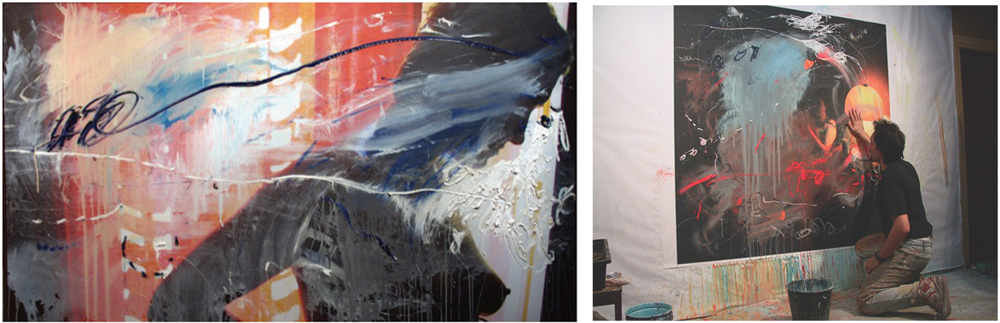

Últimas noticias
Curso de pintura abstracta
Arturo ha publicado una serie de vídeos donde explica técnicas de pintura abstracta, completo con ejercicios. Para empezar aquí tienes el primer vídeo.
No te pierdas este curso de lujo de la mano de un maestro.
Exposición individual en el Museo de la Ciudad de Móstoles
Seleccionado convocatoria de espacios expositivos 2020. Con el proyecto: Revisitando Intimidad. Del 18 de marzo al 12 de abril de 2020, en el Museo de la Ciudad de Móstoles. Nota: exposición retrasada por contingencia COVID-19, hasta nuevo aviso.

Escenografía: Mercado de amores en Mérida
Arturo realizará la escenografía para la obra Mercado de amores de Eduardo Galán sobre obras de Plauto, dentro del Festival de Teatro Clásico de Mérida 2020. Fechas por confirmar.
Arturo ya estuvo en Mérida en 2018 con la escenografía de Nerón. Puedes leer una crítica sobre aquel montaje:
Arturo Martín Burgos, el escenógrafo, ha aprovechado, casi en su totalidad, la boca del Teatro Romano. Y esto es un punto a favor del montaje, puesto que entiende el desarrollo de la historia en la totalidad del monumento.
Escenografía: Fortunata y Benito en Teatros del Canal
Arturo realizará la escenografía para Fortunata y Benito, de Laila Ripoll. Estreno el 7 de febrero de 2020 en los Teatros del Canal de Madrid. Más información y entradas.
Más noticias.
Escenografía
Arturo ha realizado la escenografía de múltiples obras durante más de tres décadas, incluyendo El triángulo azul por la que recibió el premio MAX 2015.

Más escenografía.
Pintura
Con más de 20 exposiciones individuales y un centenar colectivas, son casi 40 años de trabajo en la pintura, en el territorio del expresionismo. A veces abstracto, a veces fotográfico u objetual, pero siempre buscando acercarse al gesto puro, a la expresión vital y contundente de emociones humanas.

Puedes visitar parte de su obra pictórica.
Acerca de Arturo Martín Burgos
Licenciado en Bellas Artes por la Universidad Complutense de Madrid en 1985. Profesor de Pintura en la Universidad Popular de Alcobendas.
Artista polifacético con una extensa y prolífica obra, no ha dejado ninguna de las facetas de las artes plásticas por trabajar.
Puedes consultar su biografía.